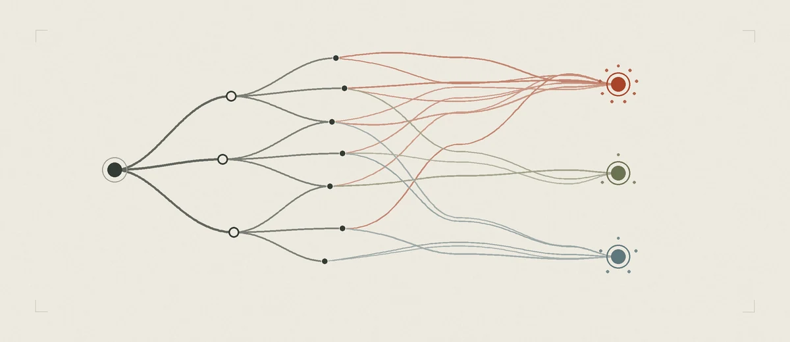

Research papers
2026
Representation rigidity in face embeddings
Align two encoders with paired images so an upgraded model can search a gallery built by its predecessor.
Explore the paper
Views 1

Calibrating label-free reinforcement learning
CCAE combines confidence in a reasoning trajectory with agreement across answers to decide which responses to reinforce.
Explore the paper
Views 0

The intrinsic quality of face datasets
Combine label agreement and effective rank to distinguish useful data diversity from the spread caused by label noise.
Explore the paper
Views 1